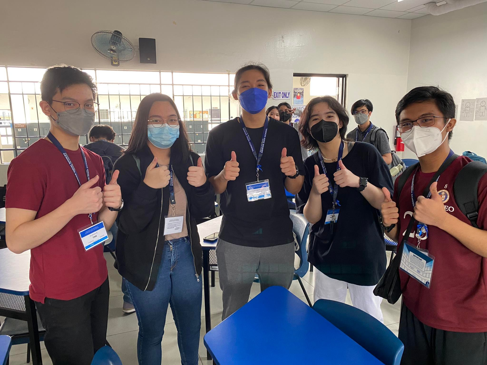

Ang Pagtawid sa Kawad: Mga puwang na iniwan ng globalisasyon sa Inang Bayan
VISION
For the Filipino people to thrive in a globalized yet equitable future.
MISSION
To bridge the people afflicted by the different local digital divides. “Ang Pagtawid sa Kawad” unravels its wires of hope through its multimedia approach.
1. Raise awareness and widen people’s grasp on digital divides,
2. Provide concrete and attainable solutions beneficial to the different sectors,
3. Be the gateway to opportunities for altruism and active support of this cause.
MEET THE TEAM

Andrew Tan
Website Developer
I’m Andrew, the web designer and programmer! About every other three days my neighbor who I consider to be an uncle will call me for help with his laptop, phone, or social media. When I visit friends’ homes I end up fixing their TVs. No one taught me a single digital skill, so I understand its importance in living life effectively, as well as the hope that absolutely anyone can attain digital literacy just by searching. Unfortunately, not everyone has equal access to this educational digital realm.
Alison Centino
Graphic Artist
I’m Alison, the graphic artist of the team! Especially being a part of Gen Z, I’ve really come to understand the importance of technology and the internet. It is a complete game changer and has completely changed the landscape of our society. The unfortunate thing about a third-world country in the Philippines is that many of us don’t have access to these things. I want to help bridge the digital divide in the country especially for those in these sectors.
Gael Bustos
Writer
I’m Gael, working as a writer in this group! Being part of the generation who grew up in the age of technology, it really has become a big part of my everyday life. Growing up with it, I have come to notice that not all are able to use this the same way as us. Because of that, I see how the digital divide is a problem in society, especially during these times wherein so many things involve the internet and technology. I want to contribute in spreading awareness on this current issue, and possibly ignite a change.
Bowie Franco
Marketing Manager
I’m Bowie, the marketing manager! I grew up being the “techy” person of the family so I’d always help my lolas whenever they struggled. I saw how Facebook helped them connect with their old friends and how much that brought a smile to their faces :) That’s a big reason why I want to help the sectors since technology really has the power to bring people together.
Marcus Suner
Editor/Writer
I’m Marcus, working as the video editor and writer of the group! Based on experience, the digital space is a revolutionising part of modern society, both in a positive and negative manner. Unfortunately, it has grown to the extent that it can no longer be supported in an inclusive, progressive, and free manner. It has become my personal goal to work towards this “freedom of movement” in the digital space to ensure that the voices of all are heard, especially those of my fellow Filipinos.